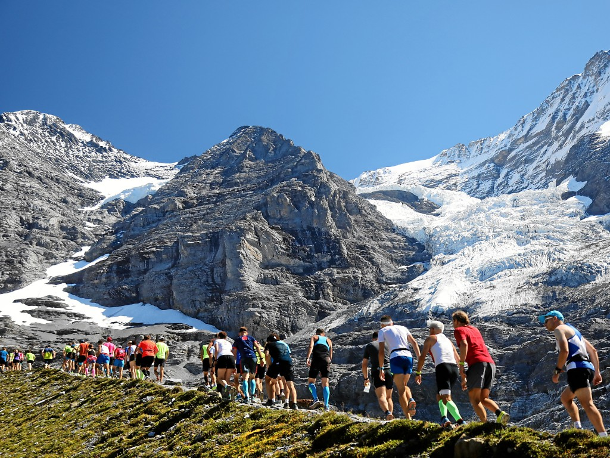
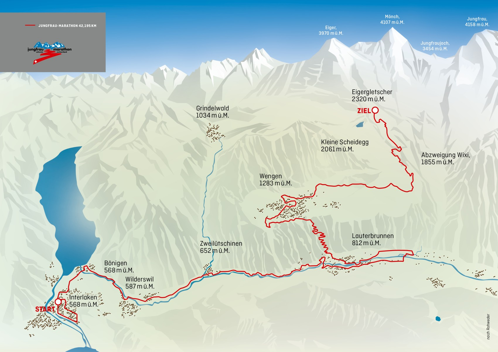
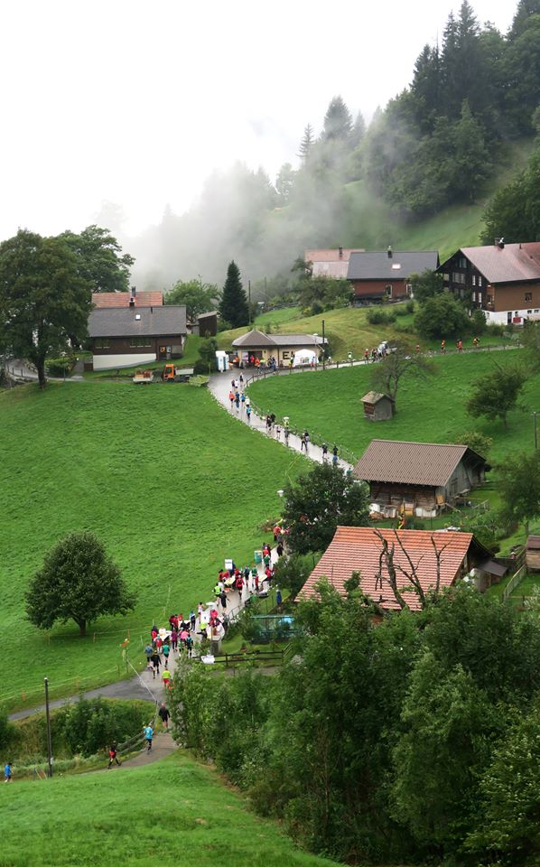

瑞士少女峰馬拉松 (Jungfrau-Marathon)
世界最美麗的越野馬拉松 ｜ 直面艾格峰、僧侶峰與少女峰萬年冰河之巔
全球知名度最高的山岳馬拉松之一。賽事從因特拉肯小鎮（海拔 566m）起跑，沿著碧綠湖岸緩升進入瀑布山谷，後半段直攀阿爾卑斯巨峰陵線，最終抵達艾格冰河站（海拔 2,320m），將純淨高山景觀與極限耐力挑戰融為一體。
• 極致爬升跨度：垂直爬升近 2,000 公尺，後半程 17km 陡升逾千米。
• 溫根壁（Wengen Wall）考驗：陡峭髮夾彎山徑，考驗雙腿登山步頻與心肺耐力。
• 終點冰河慶典：在海拔 2,320m 艾格冰河巨壁前，聆聽阿爾卑斯長號、品嘗瑞士熱起司通心粉。

賽事基本資訊與核心規格
前平後陡的高難度垂直跨度，要求跑者兼具公路巡航與高山徒步雙重實力
• 舉辦月份：每年 9 月第一個週末。
• 總關門限時：約 6 小時 30 分鐘。
• 參賽名額：全球嚴格限額 4,000 名。
• 累計爬升：+1,953 公尺。
• 累計下降：-200 公尺。
• 起終點海拔：566m 直登 2,320m。
• 路面屬性：湖岸柏油、碎石山徑、冰河步道。
• 難度分級：極高（高海拔山岳越野）。
• 完賽率：歷年官方統計約 92%。
• 賽事聲譽：世界公認頂級景觀馬拉松。
• 認證體系：瑞士田徑總會正式賽事。
• 高山紀錄：男子紀錄 3:03:54，女子 3:17:35。
賽道結構與關鍵魔王路段剖析
明確劃分三大地形階段：市區平跑、谷地緩升與後段高山陡攀天堂路
• 第一階段（0-10km 平路）：因特拉肯出發順布里恩茨湖奔馳，地勢極平，切勿盲目衝快。
• 第二階段（10-25km 緩升）：穿入勞特布龍嫩瀑布鎮，仰望施陶河瀑布，保持均勻跑步呼吸。
• 第三階段（25-42.195km 陡攀）：離開瀑布鎮後拔地而起，爬升逾千米，果斷切換快步登山（Power Hiking）。
• 痛點剖析：連續陡峭髮夾彎爬升直衝溫根台地（Wengen），雙腿承受劇烈乳酸堆積與重力拉扯；38.5km Wixi 關門點限時 5 小時 50 分鐘，一旦落後收尾單車將被終止比賽。
• 通關策略：放棄無謂慢跑，雙手撐膝大步健行快走；利用登山步頻維持心率平穩，節省體力至終點衝刺。

報名管道、時程與名額搶購策略
先報先得制：掌握每年情人節前後開放窗口，享受獨家「號碼布即車票」福利
• 開放時間：通常於每年 2 月中旬開放。
• 報名機制：先到先得（First-come, First-served）。
• 報名費用：第一階段約 CHF 179，第二階段 CHF 199。
• 搶票實況：全球熱搶，開放數日內火速滿額。
• 專屬福利：報名成功即贈瑞士境內免費火車票。
• 涵蓋範圍：瑞士全境任何車站二等座往返因特拉肯。
• 使用期限：賽前至賽後約 10 天內均可兌換使用。
• 賽後下山：憑號碼布免費搭乘艾格快線纜車或齒軌火車。
• 合作模式：授權海外運動旅行社販售。
• 套裝內容：保證參賽名額 ＋ 少女峰地區精選飯店住宿。
• 適合跑者：錯過官網搶票或需要全程旅程照應者。
• 優勢：100% 參賽確定性。
• 慈善途徑：向賽事合作公益基金會捐款獲取席位。
• 轉讓條款：大會允許在規定期限內支付手續費轉讓。
• 取消保險：報名時建議加購取消保險。
• 周邊賽事：週五設有 Minirun 與歡樂跑。
高山物流交通、住宿選址與 Expo 領物
因特拉肯起跑至艾格冰河終點之高山越嶺物流：行李直掛格林德瓦
• 起點集結：因特拉肯霍赫馬特草坪（Höhematte），步行可達因特拉肯東站與西站。
• 終點位置：海拔 2,320m 艾格冰河站（Eigergletscher）。
• 完賽下山：憑號碼布免費搭乘高科技「艾格快線纜車（Eiger Express）」直降格林德瓦（Grindelwald Terminal）領取行李，再轉乘火車返回因特拉肯。
• 首選 A 區（因特拉肯市中心）：步行即達起跑點與賽前博覽會，生活機能與餐飲最豐富。
• 首選 B 區（格林德瓦 Grindelwald）：完賽下山第一站，領完行李可直接回飯店泡湯休息。
• 首選 C 區（勞特布龍嫩 / 溫根）：深處瀑布峽谷，賽事途經點，適合親友沿途駐點加油。
• 博覽會地點：因特拉肯賭場花園展廳（Kursaal Interlaken）。
• 領物規範：週五開放親領號碼布、晶片與官方紀念背包禮包。
• 行李直掛要領：比賽清晨在起跑區交付大會寄物袋，大會將透過專屬貨運火車將衣物直接運送至下山站「格林德瓦」供賽後更衣。
高山氣候應對、越野鞋選型與能量補給
起點 15°C 至終點近 0°C 的極端溫差：高抓地越野鞋與防風保暖必備
• 起點氣溫：因特拉肯山下約 12°C 至 20°C，氣候宜人。
• 終點氣溫：海拔 2,320m 艾格冰河終點常驟降至 0°C 至 8°C，且偶有冰雪寒風。
• 紫外線強度：高海拔紫外線強烈，需備運動太陽眼鏡與高係數防曬。
• 體感落差：劇烈爬升流汗後，衝線靜止極易瞬間失溫。
• 跑鞋首選：強烈建議選用兼顧輕量與深齒紋大底的「混合型越野跑鞋」。
• 路面適配：前半程柏油需適度回彈，後半程碎石與泥徑需極強抓地力防滑。
• 服裝穿搭：底層排汗短袖＋袖套＋折疊風衣，下半身壓縮褲保護股四頭肌。
• 越野腰包：必備多口袋腰包攜帶能量膠、鹽錠與手機。
• 補給站密度：全程設有多達 15 處補給站，提供水、運動飲料、能量凝膠與香蕉。
• 特色熱食：後半段高山站點提供溫熱肉湯與可樂，迅速驅寒提神。
• 能量策略：爬升階段心率高、消化慢，建議每 30-40 分鐘補足小劑量能量膠。
• 電解質補充：持續爬升流汗量大，定時補鹽防止大腿抽筋。
賽後文化巡禮與系列下一站
在萬年雪山前品嘗熱起司通心粉，聆聽長號祝賀，啟航前往沙漠玫瑰古城
• 艾格冰河派對（Glacier Party）：衝線後在終點大口享用瑞士傳統熱通心粉與馬鈴薯（Älplermagronen），伴隨阿爾卑斯長號悠揚樂聲。
• 歐洲之巔少女峰鞍部（Jungfraujoch）：搭乘齒軌火車直上 3,454m 歐洲最高火車站，俯瞰壯麗阿萊奇冰川。
• 圖恩湖與布里恩茨湖遊船：賽後隔日悠然搭乘蒸氣遊船巡遊雙湖，吹著微風排酸，享受人間仙境。
